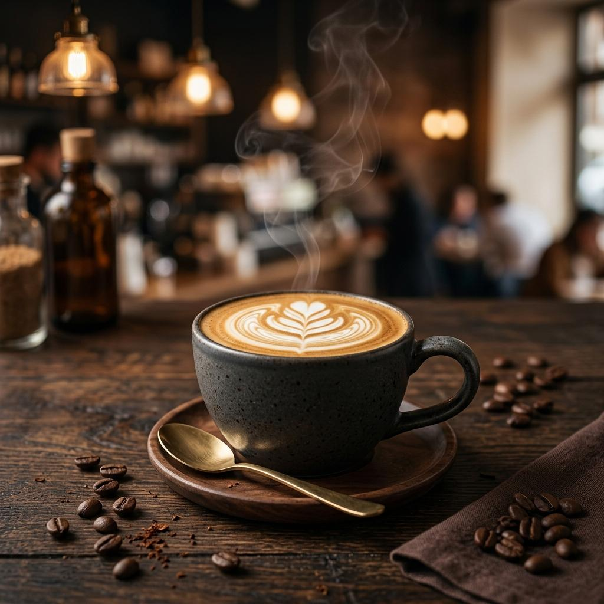
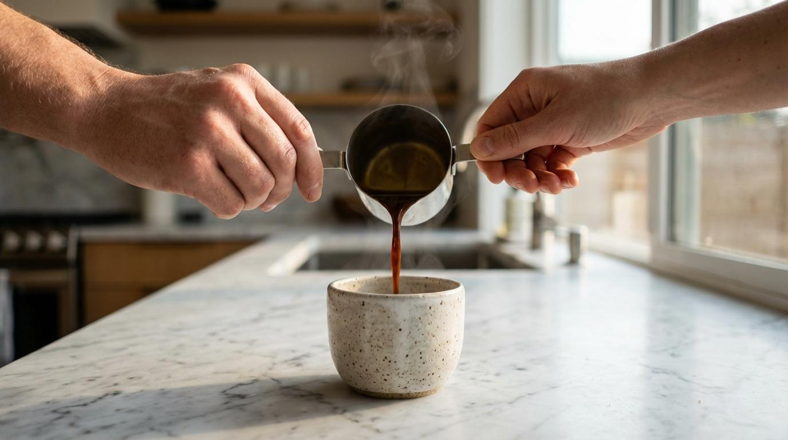
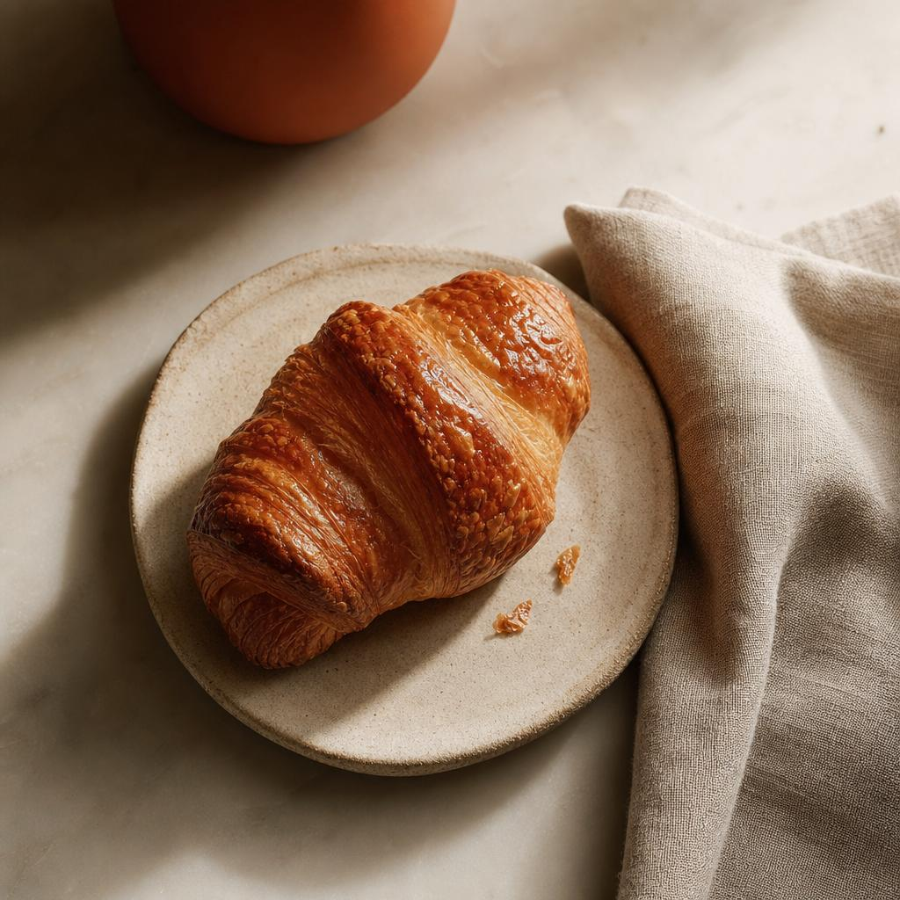
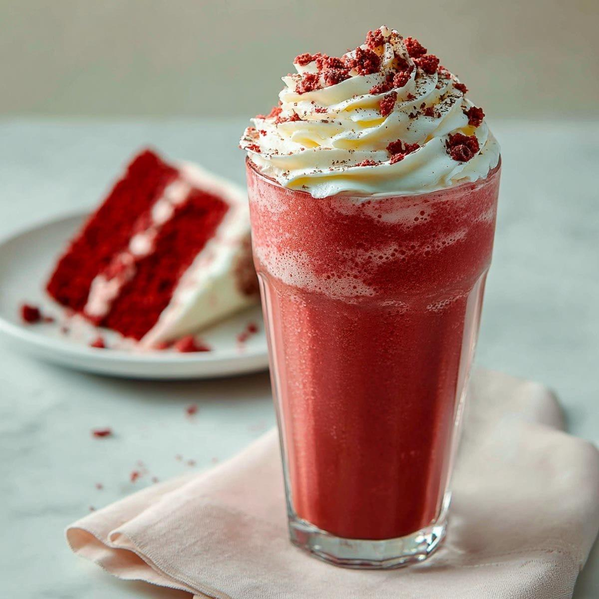
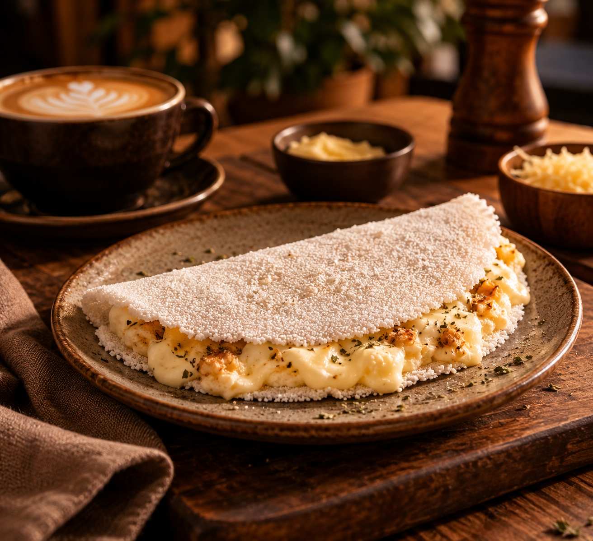
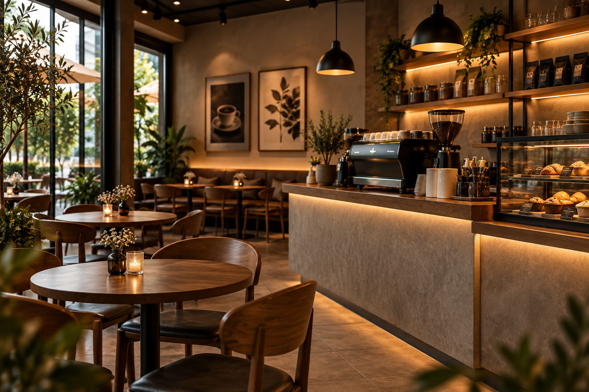
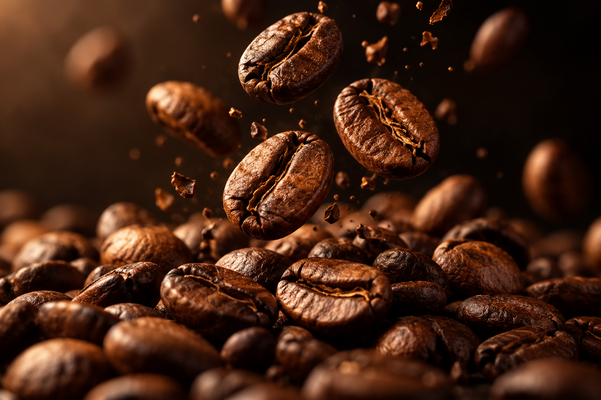
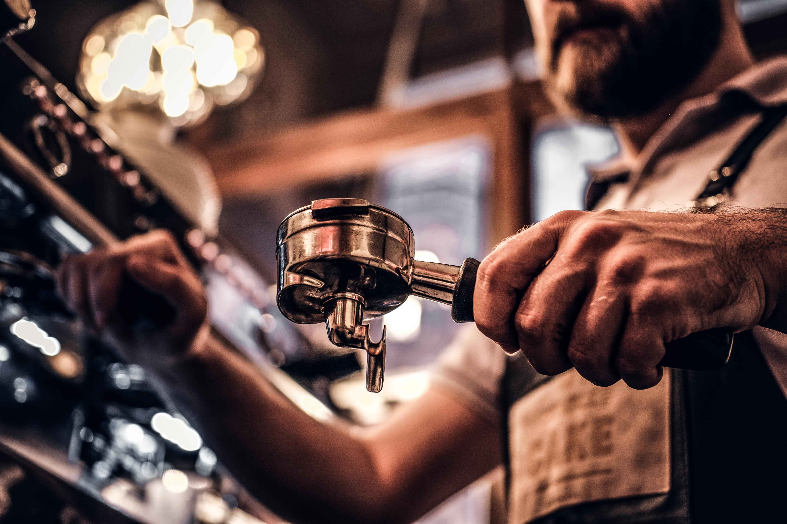
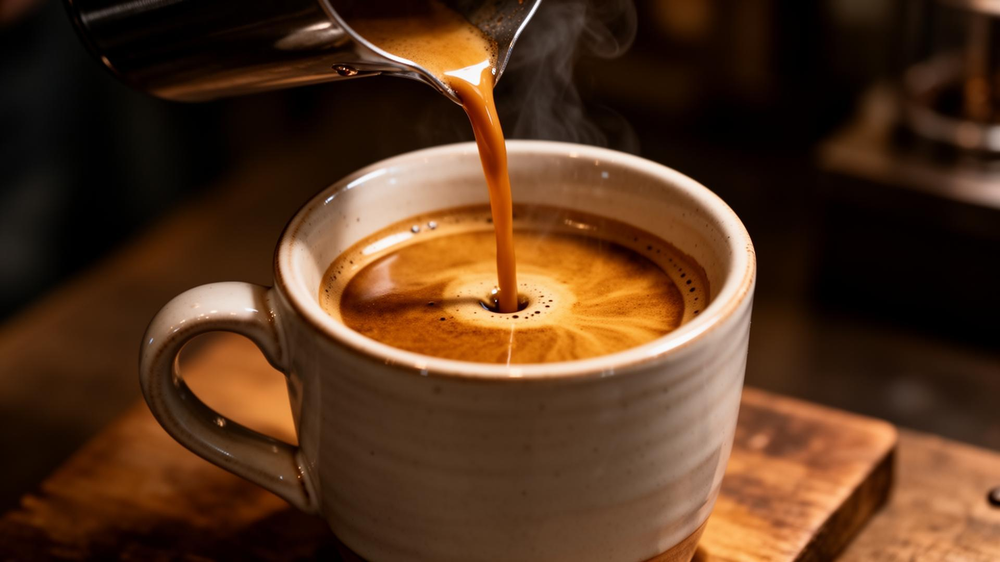

01 / CLÁSSICO
Cappuccino Grão
Clássico, cremoso e envolvente.
Uma experiência além do comum.
Acreditamos que o café é mais do que uma bebida. É um convite para desacelerar, compartilhar histórias e transformar o cotidiano em momentos especiais.
Na Grão Nobre, cada detalhe é pensado para transformar o simples ato de tomar café em uma experiência memorável.

Sabores que conquistam. Experiências que permanecem.

Clássico, cremoso e envolvente.

Delicado, amanteigado e irresistível.

Uma combinação doce e aveludada.

Leve, delicada e preparada na hora.
Cada momento merece um café especial. Descubra qual combina com você.
Para começar o dia com intensidade, energia e personalidade.
Espresso GrãoUma pausa tranquila para apreciar os pequenos momentos.
Cappuccino GrãoPorque alguns momentos merecem um toque especial de doçura.
Caramel Velvet
Entre aromas, encontros e pequenos rituais, criamos um espaço para você apreciar o que realmente importa.
Um ambiente acolhedor para conversar, trabalhar, relaxar ou simplesmente aproveitar o momento.
Da seleção dos grãos ao primeiro gole. Cada etapa faz parte da experiência.

Tudo começa com a escolha de grãos especiais.

Técnica, cuidado e dedicação em cada preparo.

Um instante especial para apreciar cada detalhe.
Mais do que café, momentos que merecem ser vividos.